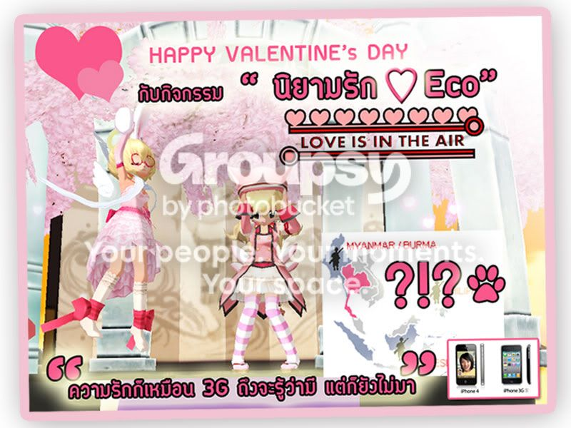

Event valentine Sv. takoyaki

Thank. LemonLimie
- รายละเอียดของกิจกรรม
พูดง่ายก็คือ ให้เพื่อน ๆ คิดสโลแกนด์ เกี่ยวกับความรักในมุมมองของตัวเอง แล้วนำข้อความดังกล่าวมาวางบนภาพ Screen Shot ECO ซึ่งภาพต้องมีความสอดคล้องกับข้อความดังกล่าวด้วย
รางวัล
รางวัลชนะเลิศ จะได้รับเงินสด มูลค่า 50 m
รางวัลรองชนะเลิศอันดับที่ ๑ จะได้รับเงินสด มูลค่า 30 m
รางวัลรองชนะเลิศอันดับที่ ๒ จะได้รับเงินสด มูลค่า 20 m
ทุกผลงานที่ส่งเข้าประกวด จะได้รับเงินสด มูลค่า 1 m (ขอดูความเหมาะสมของผลงานด้วยนะ)
สามารถส่งผลงานได้ตั้งแต่วันนี้ - 20 ก.พ. 2554
1 ผลงานต่อ 1 สมาชิก
ประกาศผลรอบคัดเลือก และเปิดโหวต วันที่ 22 - 24 ก.พ. 2554
ประกาศผลรางวัลชนะเลิศวันที่ 26 ก.พ. 2554
------------------------------------------------------------------------
ตัวอย่าง การส่งผลงาน
ชื่อตัวละคร : รูคีเมีย
Sv. : moji